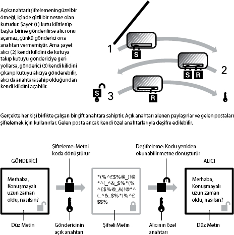

Hayatlarımızı emniyette tutmak
Dr. Simon Singh, fizikçi ve Fermat's Last Theorem (Fermat'ın Son
Teorisi) ve The Code Book (Kod Kitabı) gibi kitapların yazarı
İleri teknoloji ürünü gibi durmasına rağmen, veri güvenliği binlerce yıl öncesine dayanır. Mezopotamya'da bulunan, çivi yazısıyla ve şifreli yazılmış küçük bir kil tablet, MÖ 1500 civarına aittir. Mesajların yaratıcı biçimde gizlenmesinin tarihi de eskilere kadar gider: Eski Yunanda gizli mesajlar kölelerin tıraşlanmış kafalarına dövme ile kazınır, böylece saçlar uzadıkça mesajlar düşmanların gözlerinden gizlenmiş olurdu, ta ki mesajı alan kişi tarafından kölenin kafası yeniden tıraşlanana kadar. Bu çoğu zaman işe yarardı, ama alıcı hangi kölenin kafasının tıraşlanması gerektiğini bilmek zorundaydı. Ayrıca düşman taraf da duruma uyanıp mesajı ele geçirebiliyordu.
Ortadoğu uygarlıkları çok daha güvenilir ve gelişmiş bir sistem kullanmışlardı. Buna göre yazılı mesajlar gönderen tarafından şifreleniyor, alıcı tarafından da deşifre ediliyordu. Bu sistemlerde şifreli bir metin yaratmak için düz bir metnin harflerinin yerine önceden anlaşılmış bir sisteme göre harfler yerleştiriliyordu. Fakat biri hangi harflerin yerleştirildiğini anlarsa şifreyi kolaylıkla çözebiliyordu.
Dokuzuncu yüzyılda Arap alimi el-Kindi şifre çözmenin farklı yollarını geliştirerek ciddi bir ilerleme kaydetti. Onun geliştirdiği yöntemler arasında "sıklık çözümleyicisi" yöntemi de vardı. Bu yöntem bazı harflerin diğerlerinden daha sık kullanılması temeline dayanıyordu; örneğin İngilizcede "e" harfi metnin yaklaşık yüzde 12'sini oluşturur, dolayısıyla şifreli metinde daha sık kullanılan harfleri analiz ederek metni çözebilirsiniz. Bunu önlemek için aynı harfi temsil eden farklı şifre harflerin kullanıldığı "çok alfabeli" şifrenin icadı genellikle on beşinci yüzyılda yaşayan İtalyan bir alime atfedilse de, söz konusu yöntemi el-Kindi'nin de bildiğine dair kanıtlar bulunmaktadır.
Aradan geçen asırlar boyunca giderek daha karmaşık şifre sistemleri ve onları deşifre etmek için de giderek daha gelişmiş teknikler kullanıldı.
II. Dünya Savaşı sırasında Almanlar deşifre edilemez olduğunu düşündükleri ve Enigma makinesine dayanan ticari bir şifreleme yöntemi kullanmışlardı. Oysa savaş başlamadan önce Polonya Şifre Bürosu'nda çalışan matematikçiler, Enigma makinesinin güvenliğini kıracak yolları çoktan bulmuşlardı. Büro bu bilgiyi, şifreli mesajları anında deşifre etme yöntemleri geliştirmeye çalışan Fransız ve Britanyalı şifre kırıcılara verdi. Almanlar daha gelişmiş bir şifreleme makinesi yapınca, onlar da daha gelişmiş yöntemler buldular, buna programlanabilir ilk elektronik bilgisayar da dahildir.
Görünüşe göre ne kadar karmaşık olursa olsun, hiçbir şifre sistemi kırılamaz değildir, çünkü alıcı, kullanılan sisteme dair bir ön bilgiye sahip olmak zorundadır. "Eğer ben bir mesajı şifreleyeceksem, sana onu nasıl deşifre etmen gerektiğini söylemek zorundayım," diyor Singh. "Bunu sana telefonda söyleyemem, çünkü biri bizi dinliyor olabilir. Sana postayla da yollayamam, çünkü başka birinin eline geçebilir. Mesajı deşifre et diye sana şifreyi vermek için buluşmak da amacımızı tamamen boşa çıkarır, ne de olsa sana hemen oracıkta mesajı iletebilirim."
Fakat 1970'lerde iki ABD'li buna da bir çözüm buldu.
Anahtarın ve Kilidin Altında
1976 yılında, Whitfield Diffie ve Martin Hellman yayınladıkları şemaya göre, anahtar değiştirme sistemiyle birbirini tanımayan iki kişi, güvenli olmayan bir kanalda bile güvenli bir şekilde iletişim kurabileceklerdi.
"Açık anahtarlı şifreleme"de, şifrelemek ve deşifre etmek için farklı anahtarlar kullanılır ve haberleşen taraflardan her birinde birer çift anahtar bulunur. Bu anahtar çiftlerini oluşturan anahtarlardan biri gizli anahtar, diğeri açık anahtardır. Bu anahtarlardan hiçbiri hem şifreleme hem deşifreleme yapmaz. Gizli anahtarın sadece bir sahibi vardır. Gizli anahtara sahip olan taraf gizli anahtar aracılığıyla, kendi açık anahtarıyla şifrelenmiş bilgilerin şifresini çözebilir, kendisine ait sayısal imzaları oluşturabilir ya da kendi kimliğini ispat edebilir. Açık anahtar, sadece gizli anahtarın sahibi tarafından oluşturulabilir ve herkesin erişimine açıktır.
Roketlerin geliştirilmesini gerektiren Ay'a yolculuk, mikroçipleri gerektiren süper bilgisayarlar gibi diğer teknolojik gelişmelerin aksine açık anahtarlı şifreleme, ancak erken yirminci yüzyıl teknolojisiyle birlikte var olabiliyordu. Toplumun ona olan ihtiyacı yüzyıl öncekiyle aynı ölçüde değildi. "Artık bilginin çok değerli olduğu Bilgi Çağı'nda yaşıyoruz. Açık anahtarlı şifreleme bilgiyi veri bankalarına güvenli bir şekilde depolamanın veya onu yine güvenli bir şekilde aktarmanın yollarından biri," diyor Singh. "Bunun, tarihin en önemli gelişmesi olduğunu sanmıyorum, ama Bilgi Çağı'nda yaşadığımız için yirmi birinci yüzyıl için büyük önem taşıdığını düşünüyorum."
Şifre çözme algoritmalarının, ilk kez Diffie ve Hellman tarafından kullanılmadığını artık biliyoruz. Yirminci yüzyılın sonunda, Britanya'daki Devlet İletişim Merkezi'nin bağımsız olarak benzer bir sistem geliştirdiği söylentileri aldı başını yürüdü. 1997'de merkez, James Ellis, Clifford Cocks ve Malcolm Williamson gibi araştırmacıların, 1973'te "gizli olmayan şifreleme" sistemini geliştirdiğini açıkladı. Singh'e göre, "Bunu gizli tuttular, çünkü bu teknolojiyi korumak istiyorlardı. Muhtemelen sadece kendi güvenlik ağlarını korumak için kullandılar. Yine de, bu teknolojiyle tam olarak ne yaptıkları hakkında hiçbir bilgimiz yok."
Kuantum Geleceği
1977'de Massachussetts Teknoloji Enstitüsü'nden Ron Rivest, Adi Shamir ve Leonard Adleman, Diffie-Hellman ortak çalışmasını pratikleştiren bir algoritma geliştirerek açık anahtarlı şifrelemede büyük bir buluş yaptılar. Algoritmaya onu geliştirenlerin soyadlarının ilk harflerinden oluşan "RSA" adı verildi. Bu algoritma olmasaydı, online alışveriş, ücretli televizyon kanalı satın almak gibi işlemler mümkün olmaz, hırsızlıkları ve onaysız değişiklikleri saptayamaz, güvenli bir şekilde cep telefonu görüşmeleri yapamazdık.
Şifre kırıcılara karşı yürütülen savaş bitecek gibi görünmüyor ve günümüzde atomaltı dünyanın yasaları da güvenli iletişimin hizmetine giriyor. Bu teknik "kuantum iletişim" yöntemlerine (özel şekilde hazırlanmış ışık fotonları gibi) dayanılarak yapılan gizlice dinlemeleri anında ifşa ediyor.
"Şirketler her güvenlikli finans işlemi için yeni kuantum hesaplama teknolojileri geliştiriyor," diyor Singh. "Herhangi biri fotonları engellerse, alıcı fotonların bozulduğunu ve mesajın tıkandığını söyleyebiliyor. Bu artık bilimkurgusal bir gelecek değil, düpedüz bir gerçektir."
